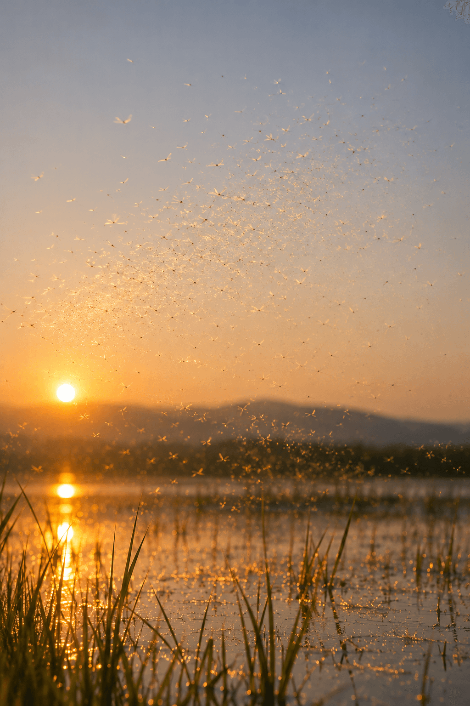

Na maande in modderslik
fladder hul vlugtig bo die vlei
vir 'n vlietende oomblik ...
tussen hemel en aarde, vry.
Niks om na te streef,
geen doel om te vervul,
slegs 'n oomblik om in te leef,
want lewe is kosbaar,
maar alles bly kos.
---
## Filosofiese verwysings
Su Shi (蘇軾, 1037–1101) — In Die eerste ode oor die Rooi Krans (前赤壁賦, 1082) vergelyk die Chinese digter die kortstondigheid van die mens se bestaan met eendagsvlieë tussen hemel en aarde.
Bṛhadāraṇyaka Upaniṣad 1.4.6 — Hierdie antieke Indiese teks beskryf die skepping in terme van voedsel en die eter van voedsel, met dié slotreël, maar alles bly kos,
---
## Die eendagsvlieg
Die eendagsvlieg (Ephemeroptera) behoort aan 'n oeroue insekorde waarvan die oorsprong sowat 300 miljoen jaar terugstrek. Ondanks die verloop van miljoene jare bly die kenmerkende kontras tussen 'n lang lewe onder water en 'n kortstondige bestaan in die lug deel van hul lewensiklus.
As nimfe leef hulle maande lank, dikwels bykans 'n jaar, onder water, tussen slik en waterplante. Wanneer die tyd aanbreek, dikwels in die lente of somer, kom hulle as gevleuelde insekte uit die water te voorskyn. Hulle vervel nog een keer voordat hulle geslagsryp is.
In hul kortstondige volwasse bestaan, soms slegs enkele ure, soms 'n paar dae, paar hulle. Die mannetjies sterf gewoonlik kort daarna, en die wyfies nadat hulle hul eiers in die water gelê het.
'n Lewe van maande onder modder, gevolg deur 'n vlietende oomblik tussen hemel en aarde.